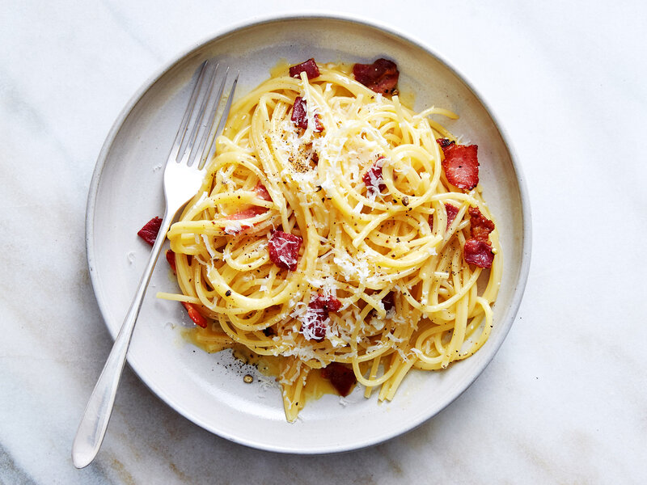

Spaghetti alla carbonara. Luscious and wonderfully indulgent, pasta carbonara takes as long to make as it does to cook the pasta.The ingredients are simple—just spaghetti (or another long pasta), and the carbonara is made with pancetta or bacon, eggs, Parmesan, a little olive oil, salt and pepper.The silky carbonara sauce is created when the beaten eggs are tossed with the hot pasta and a little fat from the pancetta or bacon.
Check out the latest information on Simply Recipe.
| Email: | Phone Number: | Sir Name: |
| rvtv86@durham.ac.uk | Kuan | Liang |